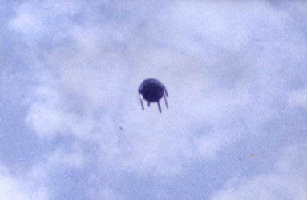

Photographie à Alfena (Portugal)

À Alfena (Portugal), plusieurs témoins voient une boule volante avec des appendices "OVNI visto em 1990 continua por
explicar", CM Jornal, 2009-05-17.
Observation pendant plusieurs jours et durant plusieurs heures de formes ovoïdes
avec des feux rouges et verts qui se déplacent lentement ou restent stationnaires. Cette observation est faite par
plusieurs témoins ainsi que par une patrouille de la Police Nationale Le phénomène n'a pu être identifié bien qu'il puisse faire penser à des lasers d'une discothèque lilloise. Il peut également être rapproché de l'observation du 17 juillet si l'hypothèse d'un passage d'aéronefs n'est pas la bonneSEPRA: PAN classé D.
Une station radar de la région militaire de Privoljsko-Ouralsky (URSS) repère un engin et branche le système automatique d'identification
qui, à la réception de l'impulsion réponse, est immédiatement mis hors-service. Le triangle d'où partent 3 faisceaux
lumineux vers le sol passe à au-dessus de la station. Eclairé par les projecteurs, il détruit d'un
éclair jailli du milieu du bord une antenne en acier qui brûle comme du bois, et atterrit dans un champ potager (qui
sera boulversé) à 140 m de la station et y reste . Au cours de cette période, 2 sentinelles
disparaîssent. Elles seront retrouvées complètement amnésiques, persuaduées de n'avoir pas quitté leur poste. Leurs
montres retardent de la durée de leur disparition.
Un phénomène est photographié à Vilar-Alfena (Portugal). Malgré une très longue
investigation des enquêteurs portugais, spécialistes et scientifiques n'ont pas réussi à caractériser cet objet
de manière satisfaisante, dont la forme rappelle celle d'un gros insecte.
21:45 A Thann (Haut Rhin), un couple et leurs enfants
observent une forme ovoïde de couleur laiteuse au-dessus des arbres. Cette forme a effectué un mouvement
giratoire durant 15 mn environ avant de disparaître. Une enquête de voisinage a permis de trouver 4 autres
témoins ayant vu des phénomènes similaires les 19, 20 et 21 septembre SEPRA: PAN classé D.
À Privas (Rhône Alpes), 5 témoins sont intrigués par 3
boules lumineuses blanc-jaunes à contours flous, comme vu à travers les nuages. Un 6ème témoin habitant
dans une localité voisine indique que ces lumières étaient le reflet sur les nuages de 3 gros projecteurs posés au
sol SEPRA: PAN classé A.
À Thiant (Nord), 1 femme regarde sa télévision quand son
attention est attirée à travers sa fenêtre par 1 boule lumineuse qui se dirige vers la maison. Elle est effrayée et
appelle ses 2 voisines qui assistent au phénomène. Après une ascension, la boule redescend pour stationner au-dessus
d'un arbre. A ce moment, elle devient très lumineuse éclaire toute la zone en aveuglant les témoins. L'ensemble de
l'observation a duré 5 à 6 mn GEPAN: Cas de type D.